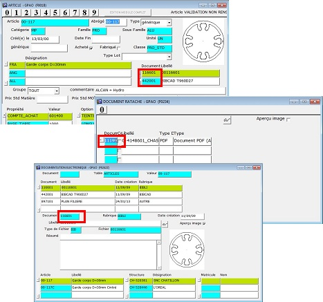

Depuis
le 31/01/2014, un miroir des fichiers de la GED est présent sur le site de
Pinon.
Depuis
le 31/01/2014, un miroir des fichiers de la GED est présent sur le site de
Pinon.
Pour rechercher un fichier, recherchez l'identifiant du document dans
l'arborescence de la GED "locale". Recherche dans XP : *identifiant*
Recherche dans Win7 : System.FileName :~="identifiant"
 Télécharger la documentation Télécharger la documentation
Où trouver l'identifiant du document :

| 


 Attention !
Attention !